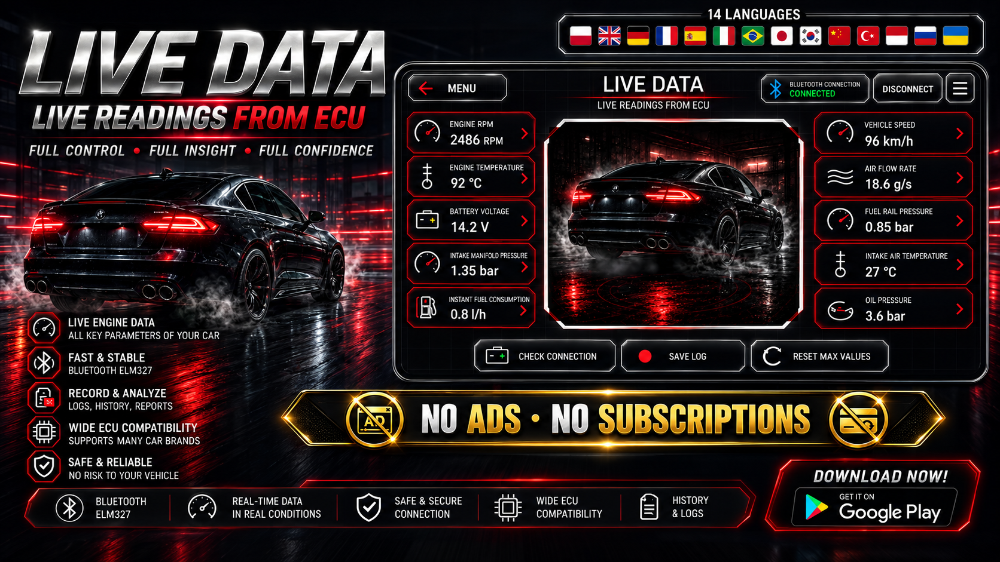
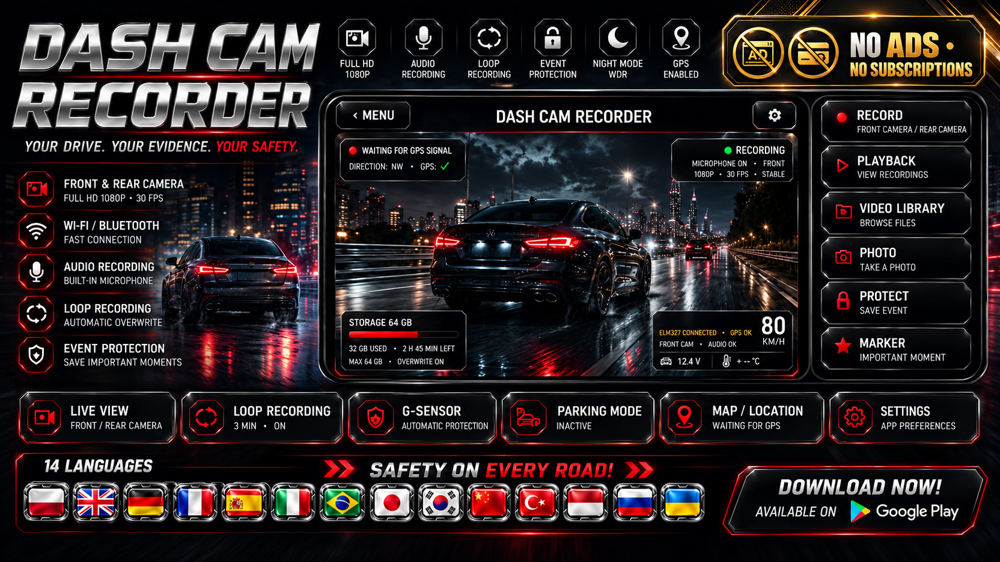
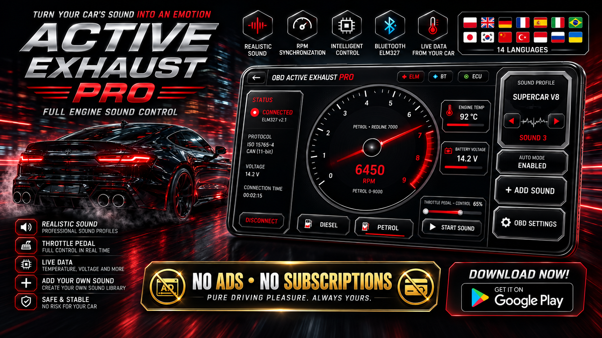
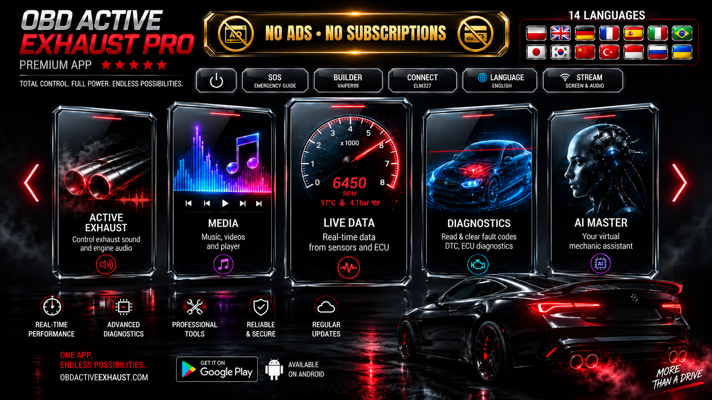

← ARVION · OBD2-Diagnose und Fahrzeug-Apps

● Bei Google Play verfügbar
OBD Active Exhaust Pro
OBD2-Diagnose, Live-Daten, Active Exhaust, KI-Mechaniker und Fahrzeugtools in einer App.
IN GOOGLE PLAY ÖFFNEN ↗OBD2 • Live Data • Active Exhaust • AI Mechanic
OBD Active Exhaust Pro vereint OBD2-Scanner, Live-Daten, ECU- und DTC-Diagnose, drehzahlabhängigen Active-Exhaust-Sound, KI-Mechaniker-Hinweise und praktische Fahrerwerkzeuge.
Ein kompatibler Bluetooth-ELM327-Adapter ermöglicht die Anzeige von Motorwerten in Echtzeit und das Lesen unterstützter Fehlercodes.
Weitere Module umfassen Dashcam, Musik- und Videoplayer, Fahrzeugnotizen, Sprachmemos und Schichtkalender. Einige Funktionen benötigen keinen OBD2-Adapter.
Unterstützte Diagnosen hängen vom Fahrzeug und Adapter ab. KI-Hinweise ersetzen keine fachkundige Prüfung.
Beschreibung und 7 Bilder






Eine andere, eigenständige App in unserem Portfolio: AI ACTIVE EXHAUST PRO – OBD2. These are separate applications, each with its own description and image gallery.
IN GOOGLE PLAY ÖFFNEN ↗